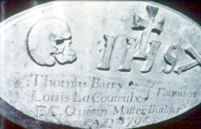

|
by
St. Mary's Roman Catholic church was incorporated by the State legislature in October 1796 and began operations the following year - making it the second oldest parish in New York State. St. Mary's was the fifth or sixth church to open in the city of Albany. Catholics had been part of the Albany population since the early days of the community. They were chiefly of French, German, and Irish ancestries. In 1697, the first comprehensive census of city householders specified some ethnicity information. Some of those not so tagged were of English or German origins - some of whom came to America as Catholics. Joseph Janse (Van Zandt) was identified as a Spaniard. In 1699, an "Albany" list of those who swore an oath of allegiance to the Protestant king of England noted that Frans Pruyn and "Villeroy" (Pierre De Garmo) were "Papists" and were excused from swearing in lieu of otherwise attesting to their loyalty to William & Mary. For most of the eighteenth century, Albany's Catholics found basic spiritual services under the Albany Dutch church. However,they do not seem to have become members. Probably because of worship similarities and language, Catholics had gravitated to St. Peter's and to the Lutheran church.
Catholic priests and missionaries had visited Albany since Father Isaac Jogues was ransomed by Dutch traders and brought to Fort Orange in 1642 or 1643. Visiting Catholics of note included Marylanders Charles and John Carroll in 1776, Fr. Pierre de Valiniere (1792) of Canada, and others. Traditional sources tell us that services were held in private homes at least until after the American Revolution. New England born and recent convert Rev. John Thayer appears to have been the first "missionary rector" and served while the church was being built in 1798. Fr. Matthew O'Brien succeeded him and served as pastor until 1800. In November 1799, the "trustees and principal members" signed a testimonial praising O'Brien's tenure and expressing concern about the future of the parish. By 1820, St. Mary's counted over 300 parishioners (in a booming city of 12,600 residents) Initially, members of the Catholic church were buried in the Washington Park Cemetery. Following the Civil War, the stones were moved - mostly to Albany Rural Cemetery. Also located in Menands, St. Agnes Cemetery is the historic resting place of record for Albany's Catholics. Sources: The printed source of record is: John J.
Dillon, The Historic Story of St. Mary's, Albany, N. Y. . . . 1798-1932
(New York, 1933). It is not yet directly online.
But see this: facsimile
offering. Section on early St. Mary's from The Bicentennial History of Albany, pp.750-58; and online. Matthew O'Brien: "Rev. Dr. Matthew O'Brien, O. P., a native of Ireland, was born in 1756, came to America and was stationed at Albany, N. Y., from 1798 to 1800. In 1803 he was appointed to St. Peter's, New York city, and remained here until 1807. He was later stationed in Philadelphia, and died in Baltimore, 1816. He was a brother of Rev. William O'Brien, who was pastor of St. Peter's from Nov. 1787 to 1807. Matthew died in Baltimore, Oct. 15, 1816." Copied from Irish American Historical Miscellany . . . 1799 Testimonial regarding Father O'Brien:
Adaptation of a copy of a lithograph presented online via The Huntington Library. Document entitled "St. Mary's Church. 1797. : The first Catholic Church in Albany" and thought to have been issued between 1886 and 1900. The repository description reads: "Image of an elevated street view of the two-story St. Mary's Church in Albany, New York, depicted in the late 18th century, on a street corner with surrounding buildings, two women walking on the sidewalk, and a fort on the hill in the distance. Notes = Probable date based on printer history. "Pinkster Hill."--text, bottom left margin. "The Donaldson Litho. Co. Cin O." "From Original Painting in Possession of Col. Thos. Barry New York." More information from an eBay, inc. listing encountered
online
in September 2016: "This piece measures 23 1/2" wide and 19 1/2" high.
It reads "Pinkster Hill St. Mary's Church 1797 The First Catholic
Church in Albany From Original Painting in possession of Col. Thos.
Barry New York". It also reads "The Donaldson Litho Co. Cin O.". The
condition of this piece is very good. The colors of the print are
very good. The frame has lost a bit of the applied molding at a few
spots. I have photographed the worst for you to see." Cornerstone: Detail of the cornerstone said to have been in 1797. Modern photograph from an unknown source. Includes engravings of the names of prominent parishioners - trustees Thomas Barry and Louis Le Coulteux and "Master Builder" E. C. Quinn. Note: Existing printed resources are focused primarily on priests and organizational concerns. This page will begin to address the lives and experiences of rank-and-file Catholics such as Jean Rosie in early Albany.
privately posted 4/25/04; fully operational 8/10/16; last revised 12/22/16 |